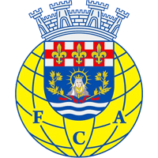
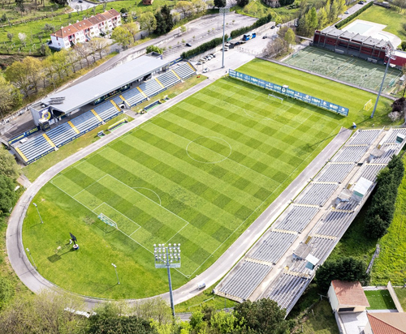

Treinador: Vasco Seabra
Vasco Seabra é um treinador de futebol português conhecido pela sua ascensão rápida dos escalões amadores até à Primeira Liga. A sua carreira tem sido marcada pela capacidade de estabilizar equipas e por passagens por vários clubes de diferentes dimensões em Portugal. Atualmente, é o treinador do FC Arouca.
Estádio: Municipal de Arouca
O Estádio Municipal de Arouca é um recinto moderno e acolhedor, muito ligado à comunidade local e palco de momentos importantes na história recente do clube.

Estilo de Jogo:
Vasco Seabra implementa no FC Arouca um estilo de jogo baseado no domínio territorial e controlo do jogo, adaptando a tática consoante o adversário.
"Amor e Paixão!"